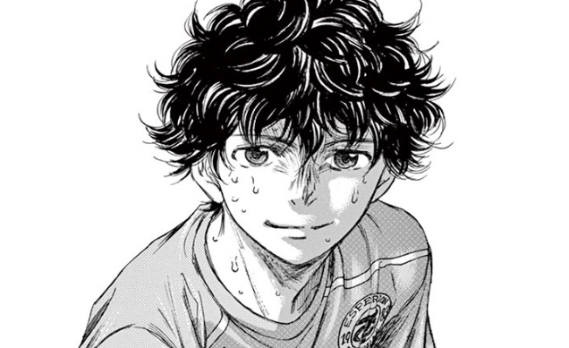
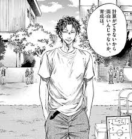
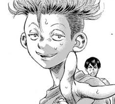
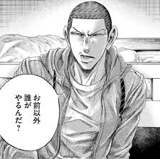

- 青井葦人（あおいあしと）

本作の主人公
セレクションを経て東京エスペディオンユースに合格
ポジション：左サイドバック
選手としての特徴：フィールドを俯瞰できる視野の広さ
他者から学ぶ姿勢や吸収力が素晴らしくチームメイトからも慕われている
- 福田達也（ふくだたつや）

葦人が所属するユースチームの監督
現役時代には海外リーグでも活躍したが怪我により選手生命を終える
監督としての特徴：高度なポゼッション戦術をチームに浸透させる戦術家である
- 大友栄作（おおともえいさく）

葦人と同じくセレクション合格組
ポジション：ミッドフィルダー
選手としての特徴：冷静な判断力を持つ
試合前は緊張のあまり震えてしまうことが多いがいったん試合が始まるとスイッチが入り落ち着いたプレーを見せる
個人的に最もお気に入りの選手です（笑）
- 阿久津渚

葦人の１学年先輩でその年の唯一のセレクション合格者
非常に攻撃的な性格。特に葦人に対して初対面の時から厳しく接している描写が何度も描かれている。その理由も徐々に明かされるかも・・・
ポジション：センターバック
選手としての特徴：恵まれた体格を生かした絶対的な対人の強さ
のちにユースチームのキャプテンを努めチームの支柱として不器用ながらにチームをまとめていく様子にも注目！